5 秒 · 9:16 · 視差滾動版位
同一張 KV，三個完全不同的 5 秒
一張平面 KV、一句核准過的訴求「有效消除 100 種食物氣味」， 我們做出了三支 5 秒廣告。三支的 TA 不同、切入點不同、連運鏡都刻意不一樣。
這頁把三支的創意怎麼長出來、以及怎麼真的做出來 完整攤開。技術的部分只留下你需要知道的程度，重點放在每一個決定背後的理由。
- 影片
- 3支
- 每支長度
- 5.0秒
- 每支幀數
- 121張
- 訴求
- 100種氣味
00
起點：一張 KV，可以長出三個完全不同的方向
拿到的東西非常少：一張品牌 KV、兩個 TA（有家庭的父母、在意口腔異味的上班族）， 一句核准過的訴求。沒有腳本、沒有分鏡、沒有參考片。
5 秒能做的事情很有限，所以第一個決定不是「要拍什麼」，而是 「同一件事，可以從幾個角度講」。我們先不收斂，先發散出六個方向， 再挑出三個彼此差異最大的往下做。
臭豆腐頭
上班族。把「別人聞到的你」直接畫出來 —— 你的頭就是你剛吃的那個東西。
口氣消消樂
泛用。把口腔變成一款手遊關卡，牙刷是武器，食物氣味是小怪。
時尚穿搭
都會男女。口氣好不是衛生問題，是最高級的時尚配件。
三個方向刻意拉開：一個超現實、一個遊戲化、一個時尚感。 這樣提案的時候不會變成「三個很像的東西挑一個」，而是三種完全不同的路。
01
先搞懂這個版位：它不是一支影片，是一段被手指控制的動畫
視差滾動版位（Parallax Scrolling）跟一般影片廣告最大的差別是： 播放速度不在我們手上，在使用者的手指上。
使用者往下滑，畫面往前跑；往回滑，畫面倒退；停住，畫面就停在那一格。 他可以在任何一個瞬間停下來仔細看，也可以兩秒滑完。
使用者會停下來看
他不是被動接收，是主動操作。只要畫面有東西可看，他就會慢慢滑、來回滑。 這是一般 5 秒影片拿不到的注意力。
任何一格都可能被看很久
不能有「反正很快帶過」的畫面。每一格都要成立，中間也不能有破綻。
我們的製作規格
| 項目 | 設定 | 為什麼 |
|---|---|---|
| 長度 | 5.0 秒 / 121 張 | 版位規格，等於 24fps 的 5 秒 |
| 比例 | 9:16 直式 | 手機滿版 |
| 結構 | A → B（首尾兩個定格） | AI 生成影片最穩定的形式：給頭尾，讓它補中間 |
| 下方區域 | 保留給產品與文案 | 三支的最後都要收在產品上 |
02
共同的 INSIGHT：口氣不是清潔問題，是社交問題
如果把「消除 100 種食物氣味」當成清潔功能講，就會做出第一百支一樣的牙膏廣告。 所以我們先把問題重新定義了一次。
口氣是一件「自己聞不到、但別人一定聞得到」的事。
這個 INSIGHT 有兩個很好用的性質：
- 它天生有畫面。「別人聞到的你」是一個可以視覺化的東西 —— 第一支就是直接把它畫出來。
- 它天生有情境。開會前、約會前、拍照前 —— 每一個情境都是一支片。
三支片都扣在這個 INSIGHT 上，只是講的方式不同：第一支講恐懼、第二支講爽感、第三支講自信。 這三種情緒溫度剛好排成一條線，提案時是完整的一組，不是三個散裝的點子。
03 · 第一支
臭豆腐頭：把「別人聞到的你」直接長在你脖子上
一個上班族走進會議室，同事默默退開。 因為在別人眼裡，他的頭就是一塊剛吃完的臭豆腐。
創意是怎麼收斂出來的
一開始的版本比較安全：用飄散的氣味線、或是同事皺眉的表情來表現。 但這兩種都太常見，而且在 5 秒裡讀不出來。
後來的轉折是把 INSIGHT 逼到最極端 —— 如果別人聞到的就是你的全部， 那不如直接讓那個氣味變成你的臉。一旦這樣定義，畫面就自己長出來了： 不需要任何說明文字，任何人看第一眼就懂。
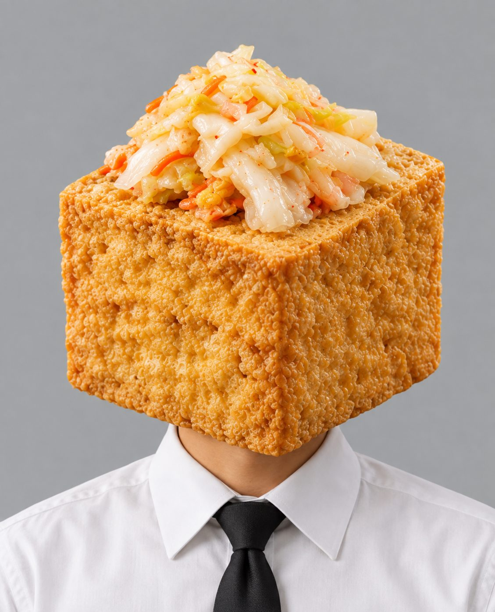
三個定格的結構
5 秒裝不下一個故事，但裝得下三個定格。我們把它設計成鏡頭往下穿過三個樓層：
會議室：問題
臭豆腐頭的男子走進會議室，兩側同事往外退。
洗手台：行動
鏡頭往下一層，他在鏡子前刷牙。
回到會議室：結果
再往下一層，他恢復成正常的臉，同事靠回來。
三個定格之間用垂直穿過樓板的鏡頭移動連起來 —— 這個運鏡本身就在講「往下深入到問題的根源，再回來」。
怎麼做出來的
AI 生成影片最大的問題是它不知道鏡頭該怎麼走。 文字寫得再詳細，它還是會給你一個它自己想像的運鏡。
解法是先在 3D 軟體裡把鏡頭運動「排練」一次 —— 用最簡單的灰色方塊搭出空間和人物，把鏡頭的路徑、速度、加減速全部做好， 輸出成一支小影片，再把它當成範本餵給 AI。
技術細節：白模到底做了什麼（想了解可以展開）
在 Blender 裡用純灰色方塊搭出三層空間，攝影機從上往下垂直移動，穿過兩層樓板。 重點只有四件事：
- 鏡頭的加減速。停在定格時慢、轉場時快，兩段轉場都做了 ease-in-out， AI 才知道哪裡該停、哪裡該衝。
- 人物的相對位置。誰在左、誰在右、誰離鏡頭多近，要跟 KV 對得起來。
- 鏡頭焦段。太廣角會變魚眼，這支最後用 49mm。
- 不要有東西擋鏡頭。第一版有幾個方塊剛好卡在鏡頭前，全部拿掉。
人物用的是現成的可動人偶骨架，擺好姿勢就好，不需要做角色建模。
把場景和角色拆成「零件」
光有鏡頭還不夠，AI 還需要知道「長什麼樣子」。 所以我們另外生成了一組參考圖，每個角色給多角度、每個場景給多視角， 讓 AI 不會在 5 秒內把人臉換掉。
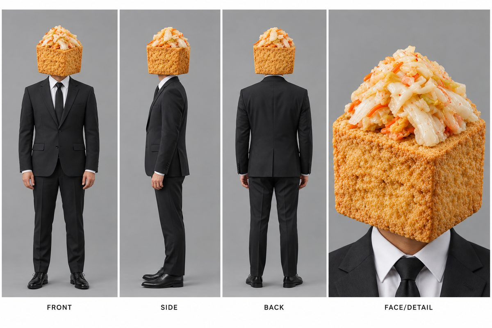
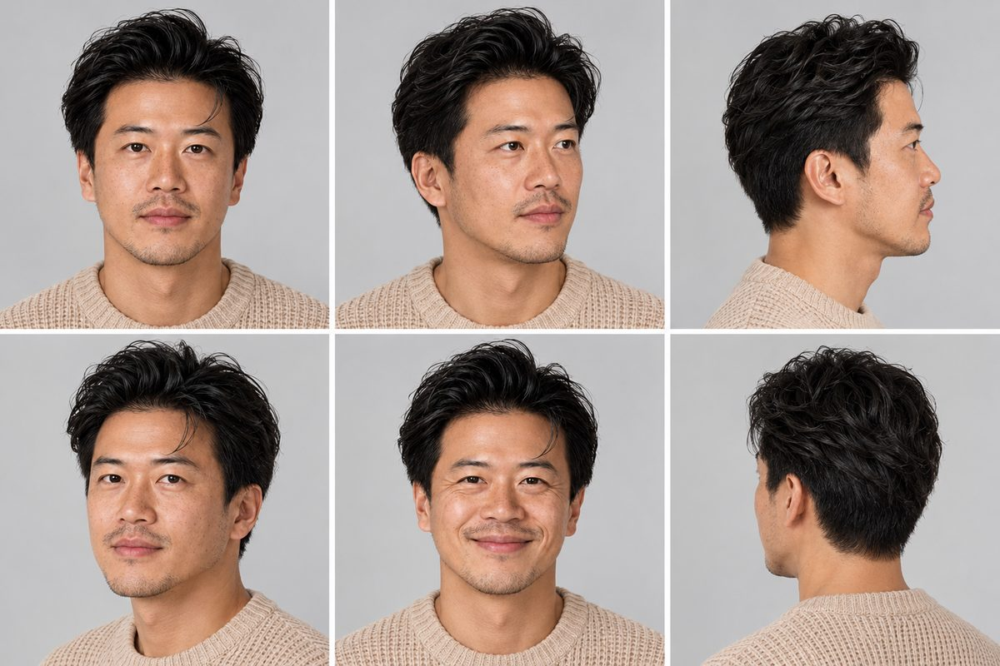
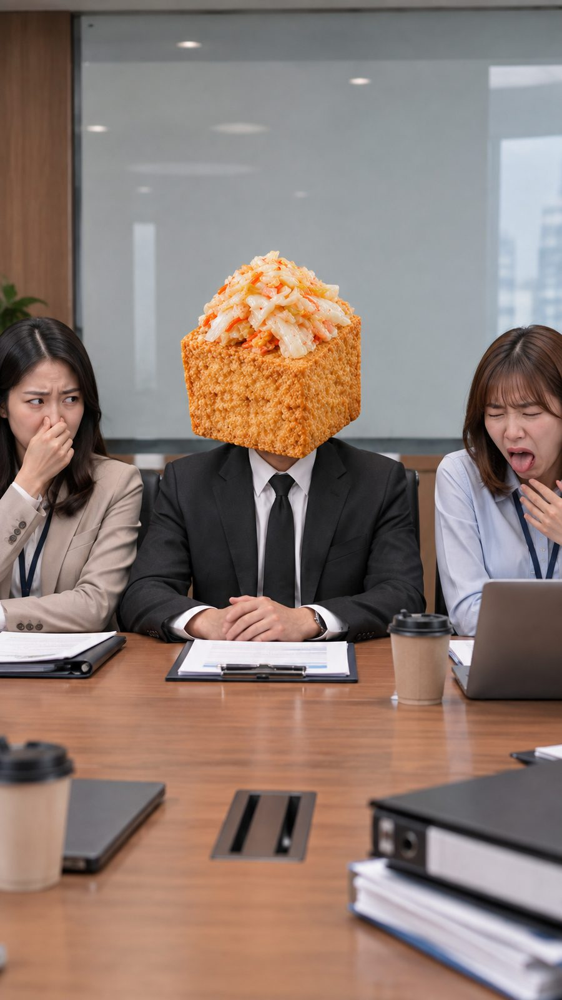
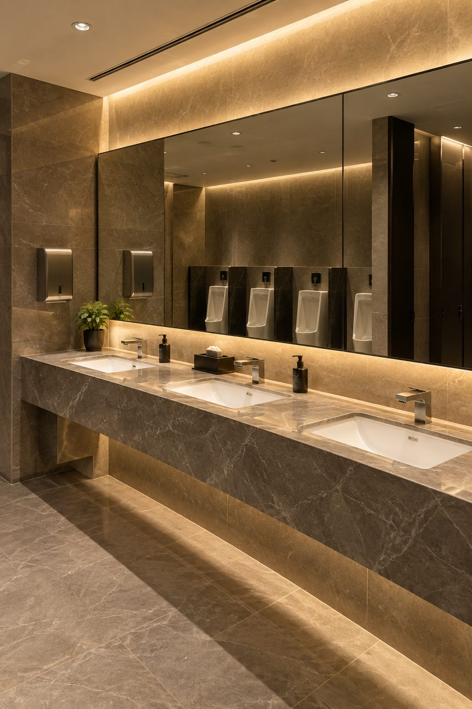
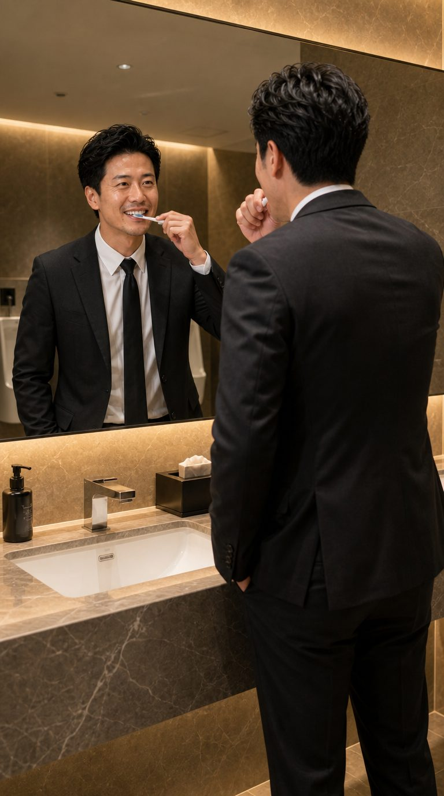
第一支 · 完成片
臭豆腐頭
往下滑，畫面就會前進。試著滑到中間停住 —— 你會看到鏡頭正在穿過樓板，這一格是一般影片不會讓你看到的。
↓ 用滑的
概念：別人聞到的你，就是你剛吃的那個東西。
情緒：恐懼 → 行動 → 解除。是三支裡最接近傳統廣告結構的一支， 也是最容易被理解的一支。
04 · 第二支
口氣消消樂：把口腔變成一款手遊關卡
牙齒排成一圈，上面坐著八隻食物小怪。牙刷從左邊掃進來， 把它們一隻一隻清掉。五秒，就是一個關卡通關的過程。
為什麼是遊戲
這一支的出發點跟第一支相反。第一支講的是「不刷牙的後果」， 這一支講的是「刷牙本身很爽」。
「消除」這個動作天生就是遊戲語言 —— 消消樂、塔防、清版闖關， 大家的手指都已經被訓練過了。把牙刷變成武器、把氣味變成小怪， 不需要任何學習成本。
使用者可以自己控制速度，就像真的在玩。
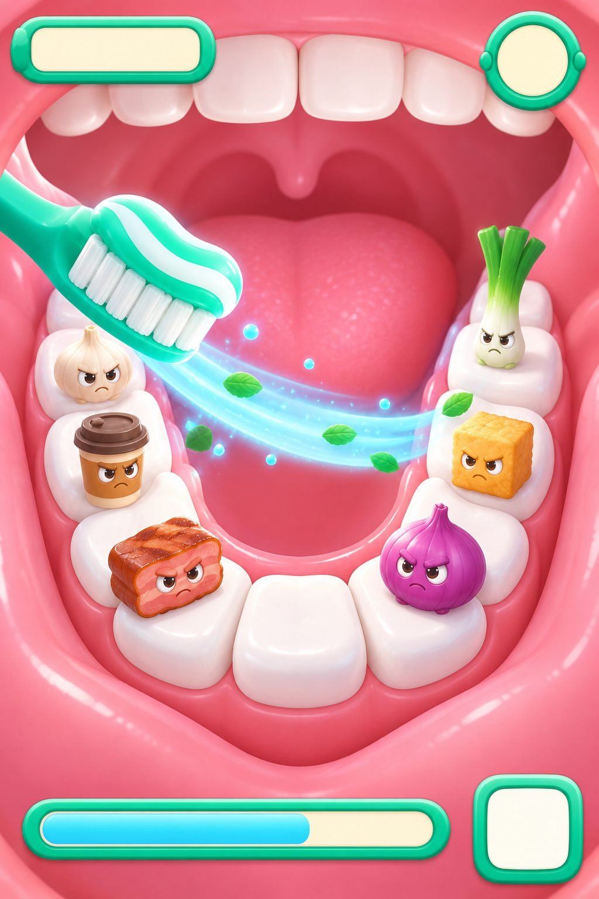
小怪的設計規則
八隻小怪全部是食物本人：洋蔥、泡麵、餅乾、咖啡、烤肉、起司⋯⋯ 每一隻都有表情，被清掉的時候會有反應。
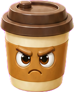
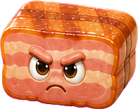
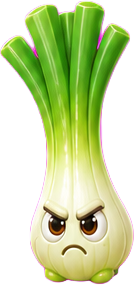
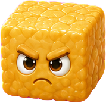
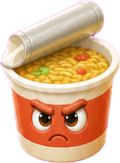
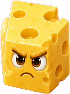
怎麼做出來的：把畫面拆成三層
這支沒有用 3D 白模，因為鏡頭是完全固定的 —— 不需要排練運鏡。 難的地方在別的地方：UI 的數字和進度條，AI 做不出來。
先定一張風格圖
確立材質、光線、口腔的比例、小怪的造型語言。後面所有素材都以它為準。
做首尾兩張圖
A 是滿嘴小怪，B 是清乾淨、只剩薄荷。中間的動態交給 AI 補。
UI 另外做，而且要去背
進度條、右上角的計數器，全部另外生成在純色背景上，後期再疊上去。
後期合成
UI 的數字變化、進度條跑滿、產品包裝，全部在 After Effects 裡做。
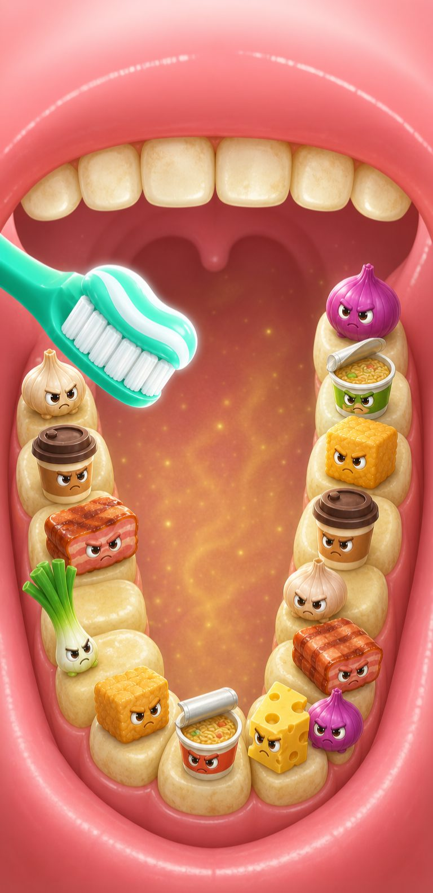
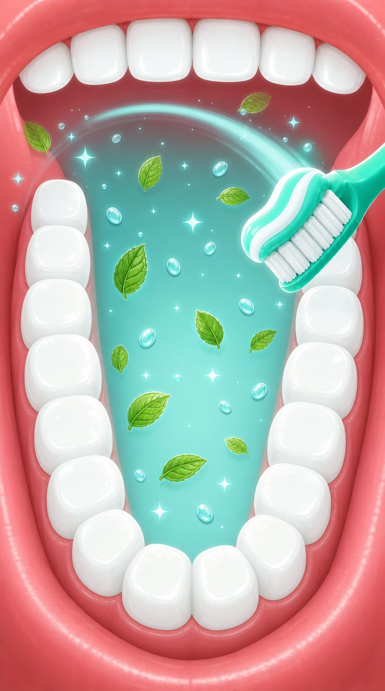
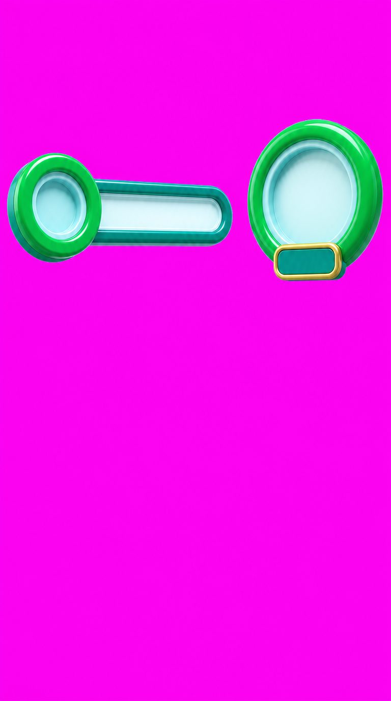
文字也是另外做的
中文字同樣是 AI 的弱項 —— 筆畫會壞、會變成簡體。 所以標題字是單獨生成、再合成進去的。
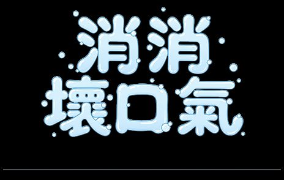
第二支 · 完成片
口氣消消樂
這支最適合慢慢滑。停在中間，可以看到右上角的計數器在跳、 左上角的進度條在跑 —— 這些細節在一般 5 秒片裡是看不到的。
↓ 用滑的
概念：刷牙 = 清掉一整排食物氣味，是一件爽的事。
情緒：純粹的爽感。沒有恐懼、沒有說教， 而且「100 種」這個數字第一次變成看得見的東西。
05 · 第三支
時尚穿搭：口氣好，是最高級的時尚配件
三個穿搭風格完全不同的人，手上都拿著重口味小吃正要入口， 腰上、口袋裡都掛著同一支牙膏。牙膏是配件，不是日用品。
這一支的策略反轉
前兩支都是「你有問題 → 要解決」。這一支刻意反過來： 「你已經很好 → 這是你配備的一部分」。
口氣好壞，別人靠近才知道。
前者決定他們注意你，後者決定他們願不願意留下來。
從除臭邏輯升級成加分邏輯。這讓三支片在提案時形成一個完整的光譜： 恐懼、爽感、自信。
三個角色的設計：差異化是唯一的重點
三個人如果只是「三個好看的人」，這支片就沒有意義。 所以每一個維度都刻意拉開 —— 剪影、配色、材質、情緒溫度、講話的口氣， 甚至連他們吃的東西、牙膏怎麼帶，都不一樣。
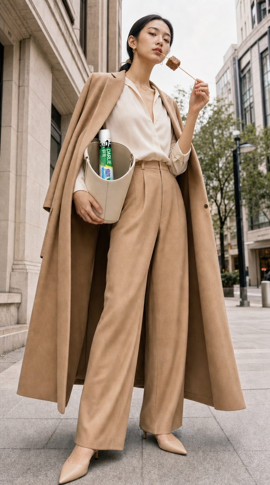
牙膏收在名牌包口露出一段
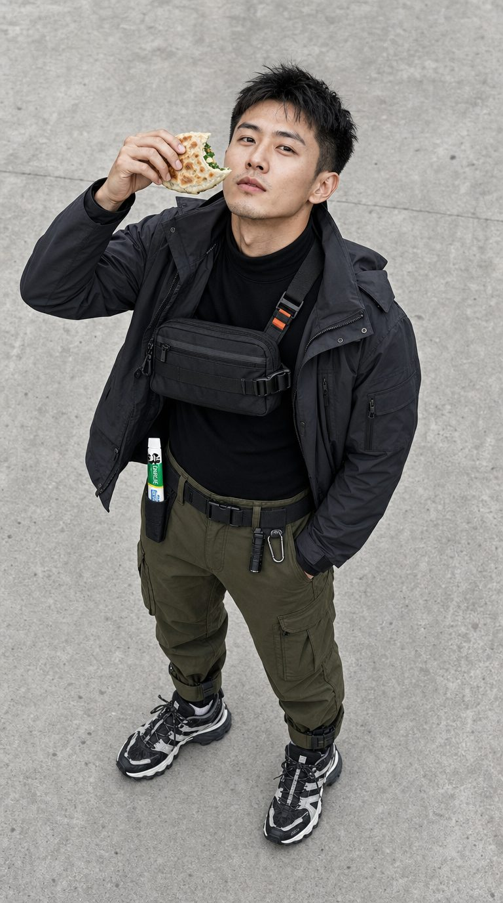
牙膏插在腰際戰術織帶環
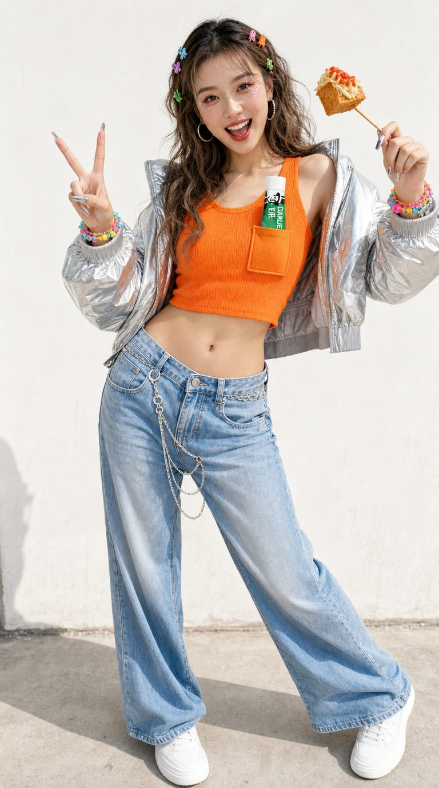
牙膏插在針織背心口袋
三句心裡話
每個人都配一句內心獨白，句型完全一樣，只換食物和理由：
正在吃豬血糕，我也不怕。
因為真正的高級感，是在靠近的時候。
正在吃韭菜盒，我也不怕。
因為最強的裝備，是開口不用退半步。
正在吃臭豆腐，我也不怕。
因為口氣好，才是最狠的穿搭。
怎麼做出來的：先排練鏡頭，再生成人
這支的難點是三個人、三個完全不同的機位，要在 5 秒內一鏡到底串起來。 一樣先用白模把鏡頭排練出來。
技術細節：三個機位是怎麼算出來的（想了解可以展開）
三個角色各綁定一個機位，三個機位的差異來自鏡頭高度，不是來自大幅度的傾斜：
- 靜奢女：鏡頭高 0.70m，幾乎平視
- 機能男：鏡頭高 2.05m，往下俯 26°
- Y2K 女：鏡頭高 1.30m，略微俯視
一開始設計的是「極端仰角 53°」那種誇張角度，但實際算過才發現： 仰角要拍到全身，鏡頭其實幾乎是平的 —— 硬加大傾斜角，腳一定會出框。 真正造成仰視壓迫感的是鏡頭低於人物重心這件事。
另外鏡頭從 24mm 換成 35mm。24mm 在 9:16 直幅下垂直視角高達 106°，會嚴重魚眼。
第三支 · 完成片
時尚穿搭
注意鏡頭全程只往同一個方向走，中途不回頭 —— 這對「滑動＝鏡頭位移」的映射很重要，使用者往回滑才不會覺得怪。
↓ 用滑的
概念：口氣好是最高級的時尚單品。
延展性：這是三支裡最好延伸的格式 —— 換一個穿搭族群、換一種食物、換一句話就是一支新的。 韓系、日雜、運動風、老錢風都能套，三張單人卡還能直接拆成三則社群貼文。
06
三支的鏡頭刻意不重複
三支片放在一起提案時，如果運鏡都一樣，會看起來像同一支的三個版本。 所以鏡頭語言是刻意分配過的。
| 攝影機 | 為什麼是這個 | |
|---|---|---|
| 臭豆腐頭 | 垂直往下穿越樓板 | 「往下深入問題，再回來」，運鏡本身在講故事結構 |
| 口氣消消樂 | 完全固定不動 | 遊戲畫面本來就是固定機位，動的是畫面裡的東西 |
| 時尚穿搭 | 橫向推移＋高度階梯 | 橫移視差最強，也是唯一有前景遮擋層的一支 |
一支垂直、一支靜止、一支水平 —— 三種完全不同的節奏。 這不只是為了好看，三支放在同一個提案裡，客戶一眼就能分辨， 討論的時候不會混在一起。
07 · 失敗集
一路上踩過的坑
這些是真的發生過、而且花了時間才修好的。 列出來是因為下一支片一定還會遇到同樣的問題。
AI 影片不照著運鏡跑
原因是我們自己寫的指令。指令裡為了避免鏡頭亂晃， 寫了「不要平移、不要旋轉、不要推拉」，結果 AI 直接把運鏡整個關掉了。
正確做法：不要禁止移動，而是把方向鎖死 —— 改成「不要靜止、不要往左、不要倒退」。而且要用文字把運鏡再主動描述一次， 只掛參考影片是不夠的。
中文字一定會壞
這不是指令寫得不夠好，是模型對中文字形的重建能力本來就不穩。 正確做法：讓 AI 生一支「無字空白管」，真正的包裝在後期貼上去。
這也是實拍廣告的標準流程 —— 產品幾乎都是後期合成的。 而且還有一個附加好處：三支片的包裝統一在後期上， 顏色、比例、logo 位置會完全一致，接在一起才不會跳動。
產品跑到奇怪的地方
兩個原因：一是只寫「在腰際」太模糊，二是前面的角色都設定成腰掛， AI 把那個概念延伸過來了。
正確做法有三層：先把配件描述清楚 （包口朝向鏡頭、口袋是有結構的），再把產品相對於配件定位， 最後明確寫出禁止出現的位置（「全圖只有一支牙膏，不在褲子、腰帶、手上」）。
白模第一版幾乎都會錯
這三支片的白模沒有一支是一次過的。實際發生過的錯誤：
- 人物上下顛倒 —— 攝影機的方向設反了
- 鏡頭沒有加減速 —— 忘了套用緩動，變成機械式等速移動
- 魚眼 —— 焦段太廣，直幅畫面的視角會被放大很多
- 有方塊擋住鏡頭 —— 道具離鏡頭太近
- 腳出框 —— 為了做仰角把傾斜角開太大
這些看起來都很低級，但重點是 —— 在白模階段花十分鐘修掉，比成片出來再改便宜太多。 白模的價值就在這裡：它讓所有空間和鏡頭的錯誤在最便宜的階段暴露出來。
08
這套流程可以重複用
三支片做完之後，流程其實已經固定下來了。 下一個案子可以直接照著走。
定 INSIGHT，不要先想畫面
先把「這個產品解決的到底是什麼問題」重新定義一次。 畫面是從 INSIGHT 長出來的，不是反過來。
發散六個，收斂三個
三個方向要彼此差異最大，不然提案會變成「三個很像的挑一個」。
先排練鏡頭（如果鏡頭會動）
用 3D 白模把空間、機位、速度、加減速做好。 鏡頭固定的片子可以跳過這一步。
生成靜態的首尾圖
A 到 B 的結構最穩。這一步要把角色、場景、產品位置全部定死。
交給 AI 生成動態
白模當運鏡參考、首尾圖當畫面參考，指令要用主動的鏡頭動詞。
文字、數字、UI、產品，一律後期
這四樣不要跟 AI 溝通，直接在 After Effects 做。
AI 生圖負責質感與光影 —— 它可以生出實拍等級的材質。
AI 生影片負責補中間的動態 —— 它最擅長的是把兩張圖接起來。
After Effects負責精確的東西 —— 文字、數字、UI、產品。
分工錯了就會卡住：叫 AI 做數字、叫白模做質感，都是在浪費時間。
09
工具與分工
| 階段 | 工具 | 負責什麼 |
|---|---|---|
| 發想 | 對話式 AI | INSIGHT 發散、文案、角色設定 |
| 運鏡排練 | Blender（白模） | 空間、機位、速度、加減速 |
| 靜態畫面 | GPT-Image 2 | 角色、場景、首尾定格、UI 素材 |
| 動態生成 | Kling Omni 3.0 | 把首尾圖之間的動態補出來 |
| 後期 | After Effects | 文字、數字、UI 動態、產品包裝 |